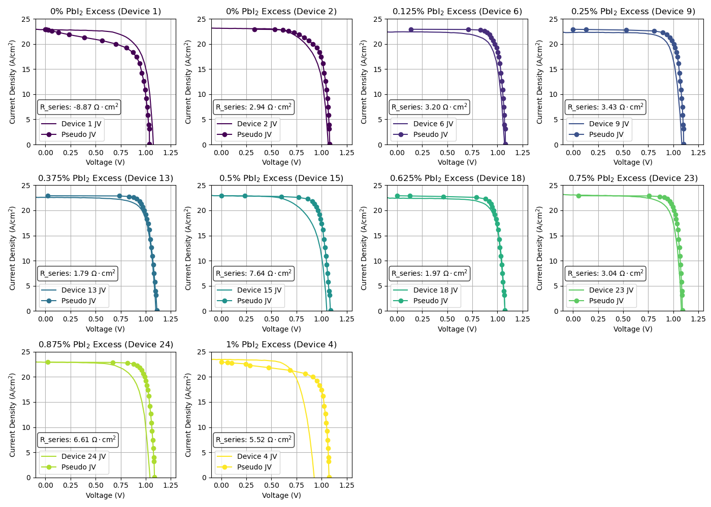

Pseudo Current-Voltage (p-JV) Testing System
Engineered a pseudo-JV characterization system for solar cells using LDC500 Series Laser Diode Controller and Keithly 2001 Multimeter. Developed control software and data analysis tools in Python.

This is an example of an experiment testing the effect of lead iodide excess in solution on perovskite solar cells. By simulating the measurement of a JV curve at open circuit, this technique helped quantify series resistance losses at the maximum power point when used alongside JV data.